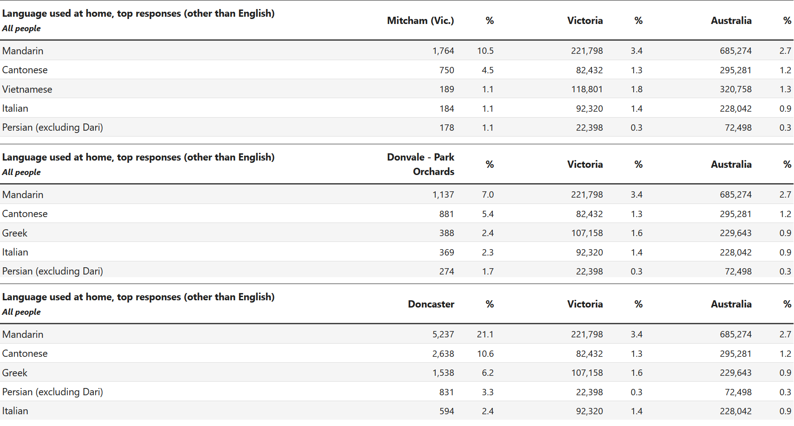

Introduction
In our research project, we examined how migration has affected the formation and understanding of Australian culture. Especially since the post-WW2 period, Australia has seen many waves of immigrations, who, in each of their own ways, have contributed to how Australian culture has manifested and been perceived in the modern post-White Australia era. We each have examined different groups of immigrants in different parts of Victoria, exploring where migrant culture is visible in Modern Melbourne. (I wrote this intro in 2 minutes, it's not very good, please someone else write something better)
For extra information as well as sources for the images, you can hover over them.
Northcote
by Neve Tsitas
According to the 2021 census results (ABS) 424,744 Australians declared they had Greek ancestry, but it’s Melbourne specifically which has the highest concentration, repeatedly being referred to as the city with the third largest Greek population in the world. How Greek migration to Melbourne has impacted the culture of inner-city suburb Northcote will be explored here.
Greek migration to Australia: A history
The first Greek migrants to Australia were seven sailors convicted of piracy in 1829 (Home Affairs, 2016). Since then, there have been multiple periods of heightened migration from Greece to Australia. According to Australian Government records, the first of these was the Gold Rush in 1850 which was followed by periods such as World War I and II. Specifically after World War II, the calls from Australia for more migrants were heeded by Greece and by 1986 250,000 people from Greece had come to Australia (Kondos, 1999, pg 8).
Overtime, Melbourne became the most popular destination for Greek settlers and it was the inner city suburbs which received the highest concentration of Greek migrants. It has been noted by Burnley (1972) that new migrants resided there due to not being able to afford to buy elsewhere as these were neighbourhoods less desirable due to smaller land plots. Within these central suburbs, the original pattern of migration was concentrated in Fitzroy and Collingwood, as Burnley tracks, but by 1966, after the Greek population in Australia had doubled, Northcote had its own lively Greek community.
Signs of Greek Culture in Northcote
The Greek Democritus Workers League Club
The Greek Democritus Workers League Club is a current day hub for elderly Greek people on Northcote’s High Street with a rich history. Originally founded in 1935, Democritus was created as a place for Greek people with communist and socialist views to come together and preserve culture but also to “work towards the goal…of becoming union members” (Yiangoulli, 2020). The attitudes of trade unions towards Greek migrants were negatively skewed against migrants and Milides in Greek Unionists in Australian Trade Unions (1993, pg 138) argues that this lasted from World War II till around 1973. The hostility was defined by an Anglo-Saxon population unwelcoming to these migrants and trade unions without resources or interest to represent Greek migrants.
For this reason organisations such as Democritus spawned to advocate for Greek workers rights and conditions with the purpose of joining unions. Milides writes of Democritus that it and organisations of the like were the first to make pleas to trade unions on behalf of Greek migrant workers remarkably rather than trade unions to the migrants. In the present day, Democritus still exists as a cultural hub for both elderly Greek community members as well as a place for the young to experience culture. For example, they offer greek dancing lessons for Greek youth which I myself once attended, allowing for culture to be passed down to a new generation.
Greek Language
A long standing tradition marking the cultural makeup of Northcote is the teaching of Greek at local schools. Westgarth Primary School (Northcote South) taught Greek as the only language on offer up until 2015 and it is currently offered as one of 4 language options at Northcote High School. There has however been efforts to change this. In 2016, Northcote High School attempted to phase out the teaching of Greek due to a push to make Northcote High “an elite government school” (Cook, 2016). The move was ultimately unsuccessful due to community protest from organisations such as the Greek Orthodox Community of Melbourne. Although similar protests occurred for Westgarth Primary School’s phasing out of Greek to Spanish, they weren’t successful in this case. The community support for teaching Greek and its remaining on the curriculum at Northcote High however is symbolic of the alive Greek community and is an avenue for non-Greek residents to experience Greek culture.
The streets of Northcote remain dotted with food from Greece run by Greek families. An example of this is authentic Greek, family run restaurant Lambs established in 1987. Alternatively, Greek delis such as Freschco Deli in Northcote Plaza remain fixtures of the Greek influence in Northcote and are frequented by residents of Northcote, Greek or otherwise.
Conclusion
The Greek community of Melbourne is vocal and still influencing the culture of Northcote. Through food, language and historical hubs the Greek hallmarks are inescapable for both non-Greeks and Greeks alike and Greek migration continues to have an impact on the sort of suburb Northcote is despite its changing demographic.
Mitcham
by Daniel Seymour
The contribution of Italian immigrants to the formation of the Eastern Suburbs
In exploring our research question, I examined the case study of the Eastern suburbs of Melbourne, specifically centred around Mitcham, exploring the impacts of large-scale Italian migration during the post-war period and how this has contributed to the formation of Australian culture in the Eastern suburbs, and how this reverberates in modern Melbourne as well. This area is one of the most apparent places for displaying the impact of migration on the formation of Australian culture. Although famously settling in inner-city areas such as Brunswick and Carlton, Italian immigrants in the post-war period additionally contributed greatly to the communities further out, fundamentally altering the cultural landscape of these areas and contributing to a different understanding of ‘white’ Australian culture. Following the devastation of the Second World War, Australia needed to ‘populate or perish’ in order to survive (Mascitelli 2015). As such, the White Australia Policy was expanded to allow the migration of Southern European immigrants from Italy, Greece and Croatia. This resulted in a wave of mass immigration from this region, fundamentally and permanently altering the cultural landscape of Melbourne. The large-scale of this wave of immigrants meant that their contributions were well-seen and observed all over Melbourne. Although by far the most famous example for Italians is Lygon Street and the other communities in the inner suburbs, I have oriented my research towards the lesser-seen ways in which Italian immigrants have changed the cultural landscape of Melbourne.
As the descendent of these immigrants myself, I have experienced and seen the impact of Italian migration on suburban culture first-hand. Italian immigrants, many of whom were employed as builders and bricklayers, such as my grandfather, were responsible for the development of the suburban landscape of the suburbs as we know it. The sheer volume of Italian immigrants working in these fields meant that the familiar suburban landscapes, such as those depicted on the right, were largely shaped by the hands of immigrants. Whilst the style is distinctly ‘Melbourne’, these buildings reveal how every part, both physical and cultural, of the Melbourne we know today has been shaped by the contributions of immigrants, without whom the Eastern suburbs would be unrecognisable.
The mass arrival of Italian and other Southern European immigrants in the post-war period could be perceived as one of the first forerunners of the ‘multicultural Melbourne’ which we know today. As argued by Butler (2022), mass-migration of European immigrants in the post-war period contributed to a changed understanding of ‘whiteness’. Perhaps in Melbourne, the contributions of Italian immigrants over the 20th century were one of the first to bring out about this shift of perception, as increased contact and contributions between white Australians and Italian immigrants helped to dismantle the racist attitudes which Italians faced upon their arrival and in the early years, sparking the assimilation of Italian culture into the mainstream and the shifting perception of what classifies as a ‘white’ Australian. Factors such as the expansion of the White Australia Policy to include Southern Europeans, the substantial contributions of Italian immigrants as well as other nationalities of immigrants arriving in Australia all contributed to the assimilation of Italian immigrant culture into the broader white Australian culture that developed in the post-war period. Although Butler focused on rural areas of Victoria and the case study of Mildura, the perception of Italians as a fully assimilated ‘white’ part of the perceived Australian culture is a defining factor of the modern, diverse Melbourne. In my anecdotal experience, Italian Australians are generally perceived as no different from other ‘white’ Australians and are a fundamental part of a ‘multicultural Melbourne’, with Italian culture being widely known and celebrated. Today, the legacy of Italian immigrants is seen in the demographics of the different areas. The populations of suburbs such as Mitcham, Donvale and Doncaster have substantial Italian-speaking communities, with the percentage of people speaking at home well above the national average (Australian Bureau of Statistics 2021). With this, we can see the legacy of Italian immigrants in a modern Melbourne. Today, although not as substantial a proportion of the population as they once were, the descendants of Italian immigrants still form a key part of Melbourne’s multicultural and diverse melting-pot culture. Depicted below are the top 5 languages other than English spoken at home in Mitcham, Donvale - Park Orchards and Doncaster. Although the proportion of Italian speaking communities is not as big as it once was, due to an aging population and other waves of immigration, the culture is still holding on into the modern era, reverberating the contributions of the past into today’s Melbourne.
Both on the small scale of suburbs and the large scale of the entire city, the contribution of Italian immigrants in the post-war period cannot be understated. Although many of the immigrants themselves have passed on, their contributions to the formation of these suburbs and the culture within them are still easily visible to this day. Italian-Australian culture has been fully adopted and assimilated into the mainstream, as one of the most famous examples of ‘multicultural Melbourne’. However, this assimilation also means that some parts of Melbourne, such as the distinctive building style in the Eastern suburbs, have lost their Italian immigrant perception. They may be perceived as having a ‘Melbourne-style’, however the Italian origins are largely forgotten. Regardless, Italian-Australian immigrant and descendent culture continues to this day, with Italians maintaining their language, culture, and contributions in the Eastern suburbs of Melbourne.
Hillside
by Caitlin de Bono
The culture of the Hillside Sharks Football Club
Shown is an image of the Hillside Sharks football club, a ground that comes alive with activity most afternoons; without a doubt every weekend. Through observation, I have found that this local landmark serves as a very simple snapshot of Australia’s cultural landscape, synthesising the ideas of colonialism and migration whilst also creating a lighthearted display of community.
The History of Multiculturalism in Football
The National Museum of Australia describes football to have originated in the 19th century from Gaelic football and an Aboriginal game known as Marngrook, however is most heavily believed to originate from the football played in English private schools. This provides a succinct overview of the English influence on Australian culture, in the light of preexisting and introduced cultures in the country
A monumental example of the prominence of racial bias in Australian football is the iconic stand made at the Collingwood vs St Kilda 1993 match. At the time, racial abuse was commonplace on the grounds, not to mention the deep-seated racism and discrimination present against Indigenous Australians. Depicted is First Nations individual Nicky Winmar, standing before the opposition whilst pointing at his skin and declaring “I’m black, and I'm proud to be black.” In proclaiming this, Winmar confronts immediate, and historically interwoven racial prejudices placed on him and multiple First Nations members of the AFL. Lift of the jersey reveals the true self and in an approximate manner, also symbolises the imperative need to abolish colonialist views in assessing the significance of First Peoples values in multicultural Australia.
At a professional level the AFL remains overrun with Anglophone racial bias. Though slight progress has been made since 2014 with the introduction of international players, only 18 of its current player base identifies as international, either being born overseas themselves or having at least one parent born overseas.

At a local level
In observing the local ethnic composition not only of the teams who play football on the ground, but the numerous groups who make use of the space for other activities (cricket, loitering, etc), a largely diverse cultural profile may be observed. The interactions the players have, all coming from diverse cultural backgrounds, shapes the cultural landscape of the ground, which can extend to the landscape of the suburb. The intermingling of parents across ethnic backgrounds does transcend cultural boundaries, and creates an excellent mixed and accepting community.
However, one must not overlook how coming together like this stands as a prime example of the solemn loss of cultural identity, as at least partially the individuals do lean into colonialist ideologies and in a way, partaking in this game evokes a feeling of irony. To a certain extent, this does symbolise a loss of cultural values under colonialism. The creation of a local community, albeit wholesome, has added another layer of distance between the First Nations Peoples and their relationship with the land. Reclaiming this bond is now hindered by a seemingly virtuous idea of a multiculturalist landscape that, in actuality, catalyses white ownership of the land.
A Reflective Review on Cultural Identity between Cultures in Hillside
My cultural identity as a third-generation individual is awkward, I am recognized by Aussies as not-quite Australian and by my Nanniet, not quite Maltese. I don’t speak Maltese other than a few words (the bad ones and “come here”,) and my closest brush with Australian culture is the Bunnings sausage sizzle.
As Shoemaker (1984) suggests, the idea of cultural identity is near incomprehensible, due to its inherent dynamic, multifaceted, unstable and emotionally charged nature. Despite this, setting oneself apart from others through identification of distinctive qualities remains indispensable, since it allows for one to maintain a sense of belonging.
Hillside, a suburb in Melbourne’s west, bears no distinct cultural identity at surface level, native trees and coloured bins dotting the curbs. Though the architectural features of the home are something to be noted on. Established in 2001, the area houses many second-generation individuals, capturing their cultural values in the construction of their homes. A stroll in the neighbourhood will allow for the observation of a European touch - columns and arches adorn most of the homes here (even a couple of elaborate angel statues and an olive tree). Migration to Australia has caused the literal landscape of the suburb to change. Culturally, the street visuals stand as a wonderful collage of diversity, the direct product of migration.
I know little of my cultural practices other than a dessert dish made during Easter, something I have watched my Nanna bake as a child, invited over to help with the decorating parts. Despite this, the recipe I was taught allows for a specific connection to culture to be made. Migration to Australia has brought significance to cultural dishes, now important in keeping tradition and culture alive. The cultural landscape of Australia is complex, and is composed of layers of culture, maintaining culturally specific practices is a way that migration has influenced its composition.
Although studies on cultural conservation do conflict, such as in “Growing up Between Cultures: Linguistic and Cultural Identity Among Maltese and Their Ethnic Counterparts in Australia'', where Joe Grixti concludes that Maltese individuals are quick to lose their mother tongue whilst Waitt et al. insists that Maltese migrants ``[do] not attempt to shed [their] cultural heritage, despite prominent assimilationist policies'', current landscapes in migrant-populated areas create a multifaceted display of cultural persistence. Celebration of culture through material and non- material means such as spoken recipes, albeit few, create hybrid identities for those living in Australia as a product of migration. Culture has migrated with the people, and hence does not reside in a place, it is brought with and cultivated within one's community. So although the third-generation cultural dilemma is still up for debate, one cannot conclude that colonialist ideologies will remove the significance migration has had on communal composition.
Bibliography
[Bibliography]